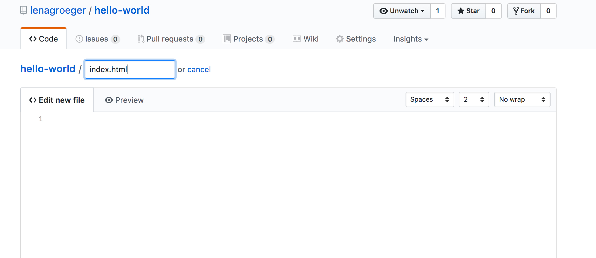

An Online Portfolio – From Scratch!
Lena Groeger, ProPublica
Part 1: Let's Make a Website
Go to Github and sign up for a new account if you don't already have one. Don't worry, Github isn't scary! We'll walk through it together.

Now that you have a brand new Github account, do the following:
- In the upper right corner, next to your avatar or identicon, click and then select New repository.
- Name your repository
hello-world. - Write a short description.
- Select Initialize this repository with a README.
- You should end up with a new repo, called hello-world.
Now let's make a new branch. Our branch will be called gh-pages. Make sure you include that dash!
- Go to your new repository
hello-world. - Click the drop down at the top of the file list that says branch: master.
- Type a branch name,
gh-pages, into the new branch text box. - Select the blue Create branch box or hit “Enter” on your keyboard.

Now let's make a new file. Hover over "Add File" and click on "Create new file." You'll be taken to a new page
You'll have the option to "Name your file..." Let's name it index.html
 We're also going to put in the following text into this new file: <h1>My New Site!</h1>
Now scroll down to the bottom and click "Commit new file"
Now navigate to the following url: [github-username].github.io/[your-repo-name]. Your repo in this case is "hello-world". My url is: lenagroeger.github.io/hello-world

Congrats! Now you have your own website, hosted on the internet for free!

But this is just the beginning. Now we have to write all the HTML and CSS to make your pages more than just a blank white page with "My New Site." That's what we'll do next.
Part 2: Build your Online Portfolio
Repeat the steps above to make a new repo called portfolio

Download Github for Mac or Windows.
We're going to get the repo we were working on before onto our own computer so we can edit it more easily.
Click on "Clone a Repository" from the Github for Desktop menu
It'll ask you for your Github username/repository, then where you want to save this repository on your computer. I saved it in my "Code" folder on my desktop.
Now I have my folder, but it doesn't have my index.html file in it! That cuz I'm still on the master branch, not the gh-pages branch. Let's switch that in our Github for Desktop.
And then click on Fetch origin to get us up to date with the gh-pages branch.
Now my folder should be up to date!
Now let's make some changes to our index.html file. Open up your portfolio folder in Sublime Text and edit it!
Save that, and go back to Github for Desktop.
It should recgonize that you made those changes!! Now give this change a summary, and click on Commit to gh-pages
Hurray! You just made your first commit from Github for Desktop. But in order to get those changes up to your published site, you're gonna have to do one more thing. Click on the Push origin button.
Now those changes are pushed up to the internet, and if you reload your portfolio page you should be able to see them. (Remeber the url for that? [github-username].github.io/[your-repo-name] So in my case: lenagroeger.github.io/portfolio
So now, figure out what you want to include in your portfolio (first off, your name should probably go on there). But what about links to clips and projects? Photos? A bio? A contact section? All of this is up to you.
If you want to begin with a super basic template, check out this one: template.html
If you were to just copy and past this entire file into your index.html file, you'd end up with this:
But that's boring! Go ahead and spend sometime making this page your own, using all you've learned about HTML, CSS and design.
Part 3: Resources
Of course, many of you will want to do more that just the basic template. Here are a number of online portfolios that may be useful for a bit of inspiraton: